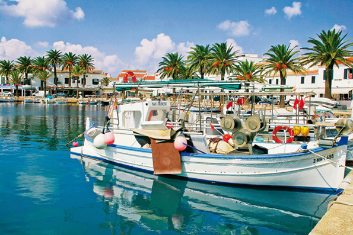

Fornells, Meer und Gastronomie
 Wenn wir über Fornells reden, reden wir über das Meer. Sein gut geschützter Hafen ist und war Anlegeplatz für viele Schiffe. Die ersten historischen Aufzeichnungen reichen bis 1300 zurück und erwähnen die Ankunft mehrerer genuesischer Schiffe. Zu dieser Zeit existierte das Dorf noch nicht. Ab dem sechzehnten Jahrhundert erst, hat sich Menorca dazu entschlossen sich gegen feindliche Angriffe zu schützen. So enstand die Festung von San Antonio und alle die an dem Bau beteiligten liessen sich nach und nach um die Festung herum nieder. Dort enstand spatter auch die Kapelle von San Antonio. Die Stadt wuchs und es bildeten sich verschiedene Familienclans, die auch heute noch bestehen: Fuxa, Garriga, Rosello, Sans... Später viel auch Fornells in die britische Militärmacht und wurde so von Ausländern regiert. So vermischte sich das einheimische Volk mit den vorherrschenden Ausländern und wuchs weiter. Im Jahre 1780,beschreibt der Kaplan der Truppen von San Antonio, die Bewohner von Fornells so:“Die wenigen Menschen um San Antonio herum, leben sehr arm und in einfach gebauten Häuser mit Steinen und Balken. Die Menschen müssen sehr mühsellig alles von Weit her anbringen um zu überleben. Trotzdem sind es sehr ehrliche und freundliche Menschen. Alles was sie besitzen teilen sie. Dieses arme Dorf hat mich begrüsst mit Salz und Weide für mein Pferd.”
Wenn wir über Fornells reden, reden wir über das Meer. Sein gut geschützter Hafen ist und war Anlegeplatz für viele Schiffe. Die ersten historischen Aufzeichnungen reichen bis 1300 zurück und erwähnen die Ankunft mehrerer genuesischer Schiffe. Zu dieser Zeit existierte das Dorf noch nicht. Ab dem sechzehnten Jahrhundert erst, hat sich Menorca dazu entschlossen sich gegen feindliche Angriffe zu schützen. So enstand die Festung von San Antonio und alle die an dem Bau beteiligten liessen sich nach und nach um die Festung herum nieder. Dort enstand spatter auch die Kapelle von San Antonio. Die Stadt wuchs und es bildeten sich verschiedene Familienclans, die auch heute noch bestehen: Fuxa, Garriga, Rosello, Sans... Später viel auch Fornells in die britische Militärmacht und wurde so von Ausländern regiert. So vermischte sich das einheimische Volk mit den vorherrschenden Ausländern und wuchs weiter. Im Jahre 1780,beschreibt der Kaplan der Truppen von San Antonio, die Bewohner von Fornells so:“Die wenigen Menschen um San Antonio herum, leben sehr arm und in einfach gebauten Häuser mit Steinen und Balken. Die Menschen müssen sehr mühsellig alles von Weit her anbringen um zu überleben. Trotzdem sind es sehr ehrliche und freundliche Menschen. Alles was sie besitzen teilen sie. Dieses arme Dorf hat mich begrüsst mit Salz und Weide für mein Pferd.”
Im achzehnten Jahrhundert enstehen neue Unternehmen zur Salzgewinnung. Das geschieht unter britischer Regierung, auch wenn die kleinen “Salinas” , in der Bucht von Fornells, von einer Gruppe Griechen betrieben wird. Nach mehreren britischen und einer französischen Herrschaft, viel Menorca letztendlich wieder in spanische Hände, durch den Vertrag von Amiens von König Carlos III. Der Könige veranlasste kurz darauf die sofortige Zerstörung von den beiden Festungen, San Felipe und auch San Antonio. Eine sehr umstrittene Enscheidung.
Fornells hat weiterhin eine starke Bindung zum Meer. Es ist das einzige menorquinische Dörfchen was typisch Maritim ist. Der Erzherzog Ludwig von Salvador erzählt in seinen Chroniken über die Fischer von Fornells: Ich kenne keine kühneren und leichsinnigeren Fischer, wie diese. Darum verschwanden auch so viele im Meer.” Im Laufe der Zeit spezialisierten sich die Einwohner auf den Hummerfang, der Fornells im späten neunzehnten Jahrhundert zum Treffpunkt, für Menschen aus allen Teilen der Insel, machte. Erzherzog Luis von Salvador gab auch das an:”...viele Menschen von Menorca kommen hierher wenn sie Urlaub machen wollen und um dem ausgezeicheneten Fisch zu essen.” Was die Dorfbewohner sich am wenigsten vorstellen konnten ist, das der Tourismus bald eine sehr grosse Einnahmequelle ihrer Wirtschaft werden würde. Langsam kamen auch Besucher aus anderen Ländern.In den 30er Jahren, kommt ein Künstlerehepaar in das kleine Dorf, auf der Insel kannte sie niemand, aber es waren die Bekannten : Hans Hartung und seine Frau Anna Eva Bergmann. Sie schrieb einen detaillierten Bericht über die Ära vor dem Bürgerkrieg und beschreibt:” Die Fischer haben ein ideales Leben, jeder hat sein kleines Häuschen mit Garten und noch ein bisschen Land”. Ana beschreibt auch das hier alle gut leben und keiner Hunger leiden muss. Eine kleine Bemerkung von ihr ist:” Die Gewinnspiele hier werden nur zum Nutzen der Armen gemacht.” In diesen Zeiten herrschte ein starker sozialer Zusammenhalt, der warscheinlich daher rührte, das den Menschen bewusst wurde das sie weit weg der anderen Dörfer, alle schwierigkeiten gemeinsam unter sich lösen müssen. Fornells, sowie auch der Rest der Insel, erlebt im späten zwanzigsten Jahrhunderts einen Touristenboom. Es entstehen neue Unternehmen und neue Gebäude rund um Fornells. Das Dorf verändert seine Art und Weise den Lebensunterhalt zu verdienen und profitiert vom neuen Wohlstand. Auch haben Sie erkannnt das sich die zwischenmenschlichen Kontakte, zu Freunden und Nachbarn sehr abgekühlt haben.
 So sind sie, sehr ehrlich. Das ist die Kehrseite der Medallie. Die Fornellers sehnen sich zurück in die Zeit wo der soziale Kontakt der Menschen im Dorf noch existierte und schauen mit etwas Wehmut in die Vergangenheit. Die Senioren der Stadt führen das alte Leben aber weiter, sowie jeher, und erinnern sich wie der Duft des frischen Brotes am frühen Morgen durch alle Gassen zog. Oder ein anderer der ganz aufgeregt die alte Geschichte erzählt:” Es war ein Tag auf dem Meer, nur ich und mein Onkel. Da zog ein Gewitter auf und es fing an zu regnen...und es regnete und regnete...und Blitze gab es auch viele. Ein ganz schönes Gewitter. Auf einmal schlug ein Blitz direkt neben dem Boot ein”. Um dann fortzufahren mit dem scheusslichem Brandgeruch den er noch Jahre danach in der Nase hatte.
So sind sie, sehr ehrlich. Das ist die Kehrseite der Medallie. Die Fornellers sehnen sich zurück in die Zeit wo der soziale Kontakt der Menschen im Dorf noch existierte und schauen mit etwas Wehmut in die Vergangenheit. Die Senioren der Stadt führen das alte Leben aber weiter, sowie jeher, und erinnern sich wie der Duft des frischen Brotes am frühen Morgen durch alle Gassen zog. Oder ein anderer der ganz aufgeregt die alte Geschichte erzählt:” Es war ein Tag auf dem Meer, nur ich und mein Onkel. Da zog ein Gewitter auf und es fing an zu regnen...und es regnete und regnete...und Blitze gab es auch viele. Ein ganz schönes Gewitter. Auf einmal schlug ein Blitz direkt neben dem Boot ein”. Um dann fortzufahren mit dem scheusslichem Brandgeruch den er noch Jahre danach in der Nase hatte.
Das Fischerdorf hat eine sehr einfache Herkunft. Seine Bewohner sind keine Menschen die Sie in Geschichtsbüchern finden, aber trotzdem schreiben sie, Tag ein Tag aus Geschichte. Jeder Forneller hat imer etwas interessantes zu erzählen, den Kampf mit dem Meer und wie er es geschafft hat in den Hafen zu steuern, oder die Geschichte wie man ihn und die Familie auf stürmischer See gerettet hat...
Lieber Leser, ich kann Ihnen vorschlagen sich einmal zu Fuss durch das Dorf zu bewegen, so kommen Sie dem traditionellem Leben hier sehr viel näher. Stellen Sie sich vor wie die Menschen hier vor 80-100 Jahren gelebt haben. Ein Fischerdorf mit viel Geschichte um die Seefahrt, auch wenn sie manchmal hart und traurig ist. Wenn Sie durch die Strassen und an der schönen Promenade entlang gehen, lassen Sie sich verzaubern.Wir Leben heute in einer Wohlstandsgesellschaft, aber sind trotzdem bescheidene und einfache Menschen geblieben. Voller Leben. So sind wir. Geniessen Sie Fornells.